9B. 3D Gaussian Splatting
Gaussian primitives, splatting pipeline, spherical harmonics, covariance decomposition, adaptive density control
1. Motivation: Why Not NeRF?
NeRF (Module 9A) achieves impressive novel view synthesis but is painfully slow to render. The bottleneck is multi-level nesting: for each pixel, cast a ray; for each ray, sample many points; for each sampled point, query the MLP. This makes real-time rendering impossible.
| Problem with NeRF | 3DGS Solution |
|---|---|
| Implicit representation (MLP) | Explicit representation (3D Gaussians) |
| Ray marching required | No ray marching — project (splat) Gaussians instead |
| Slow GPU utilization | Tile-based rasterization for GPU parallelism |
| Per-point MLP query at render time | No neural network at render time |
2. Gaussian Fundamentals (1D, 2D, 3D)
1D Gaussian
$\mu$: mean (center of the bell curve). $\sigma$: standard deviation (spread). The familiar bell curve shape.
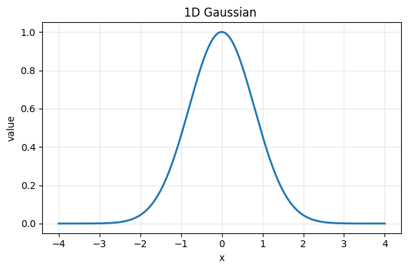
2D Gaussian
$\mathbf{p} = (x, y)^T$: query point. $\boldsymbol{\mu} = (\mu_x, \mu_y)^T$: center. $\boldsymbol{\Sigma}$: $2 \times 2$ covariance matrix encoding both spread and orientation (off-diagonal terms tilt the ellipse).
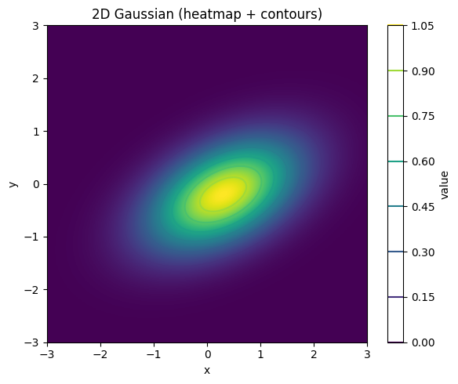
3D Gaussian
$\mathbf{p} \in \mathbb{R}^3$: 3D query point. $\boldsymbol{\mu} \in \mathbb{R}^3$: 3D mean position. $\boldsymbol{\Sigma} \in \mathbb{R}^{3 \times 3}$: 3D covariance matrix. The 3D Gaussian forms an ellipsoid in 3D space. The eigenvectors of $\boldsymbol{\Sigma}$ determine orientation; eigenvalues determine the extent along each principal axis.
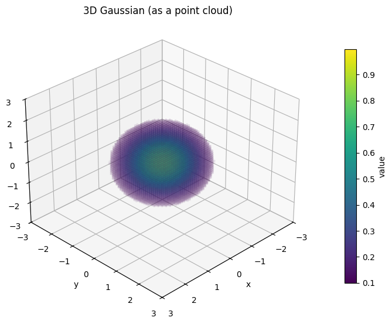
3. 3D Gaussian as a Scene Primitive
A 3D Gaussian shape alone is not enough — we also need appearance. Each Gaussian has four groups of learnable parameters:
| Parameter | Symbol | Description | Dimension |
|---|---|---|---|
| Position (mean) | $\boldsymbol{\mu}_i$ | Center of the Gaussian in 3D | 3 |
| Covariance | $\boldsymbol{\Sigma}_i$ | Shape and orientation of the ellipsoid | $3 \times 3$ symmetric |
| Opacity | $\alpha_i$ | How transparent the Gaussian is | 1 |
| Color (SH coefficients) | $\mathbf{k}_i$ | View-dependent appearance | 48 (degree 3) |
$\sigma(\alpha_i)$ = sigmoid-activated opacity ensuring $\alpha_i \in [0,1]$. Points far from $\boldsymbol{\mu}_i$ receive near-zero contribution. The shape of $\boldsymbol{\Sigma}_i$ determines how quickly influence falls off in each direction.
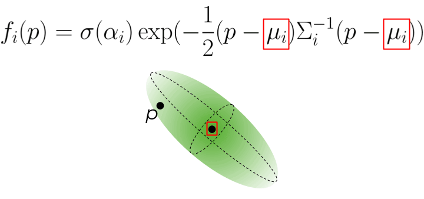
4. Method Overview
The full 3DGS pipeline has two flows: a forward (operation) flow and a backward (gradient) flow.
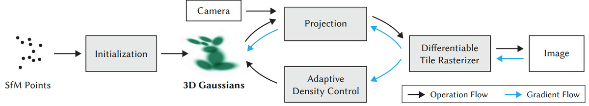
Three main stages:
- Initialization: Create initial 3D Gaussians from the SfM sparse point cloud
- Rendering: Project (splat) Gaussians to 2D, then alpha-composite to produce the image
- Optimization: Update Gaussian parameters via gradient descent and adaptive density control
5. Initialization via Structure-from-Motion
Just like NeRF, the input is a set of images from different viewpoints. Structure-from-Motion (COLMAP) provides:
- Camera calibration: intrinsics $\mathbf{K}$ and extrinsics $[\mathbf{R}|\mathbf{t}]$ for each image
- Sparse 3D point cloud: matched feature points triangulated into 3D
Each SfM point becomes the initial position $\boldsymbol{\mu}$ for one Gaussian. All Gaussians are initialized as spherical (isotropic covariance, identity-like $\boldsymbol{\Sigma}$). Colors can be initialized from the SfM point colors.
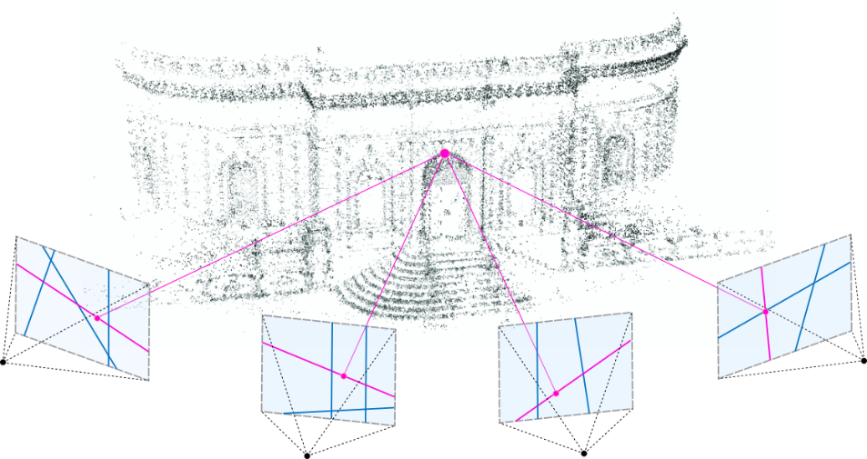
6. Rendering: Projection (3D to 2D)
To render from a given camera viewpoint, each 3D Gaussian is projected (splatted) onto the 2D camera plane. A key mathematical property makes this tractable: the projection of a 3D Gaussian through a perspective camera is (approximately) a 2D Gaussian in the image plane.
Mean projection (standard pinhole camera model):
$$\boldsymbol{\mu}_{2D} = \text{proj}(\mathbf{K} \cdot \mathbf{W} \cdot \boldsymbol{\mu}_{3D})$$
Covariance projection (using the Jacobian of the projective transform):
$$\boldsymbol{\Sigma}_{2D} = \mathbf{J} \mathbf{W} \boldsymbol{\Sigma}_{3D} \mathbf{W}^T \mathbf{J}^T$$
$\mathbf{W} = [\mathbf{R}|\mathbf{t}]$: world-to-camera transform (extrinsics). $\mathbf{K}$: camera intrinsics. $\mathbf{J}$: Jacobian of the affine approximation of the projective transformation.
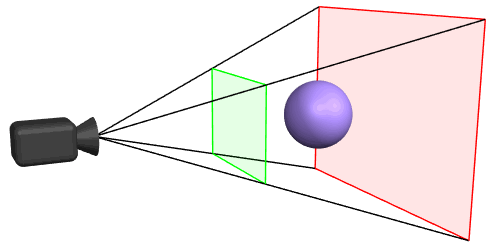
7. Rendering: Rasterization and Alpha Compositing
Once all 3D Gaussians are projected into 2D, the image is constructed via a differentiable tile-based rasterizer.
Algorithm
- Sort all projected Gaussians by depth (distance from camera), nearest to furthest
- For each pixel: iterate over depth-sorted overlapping Gaussians; accumulate color using alpha blending
Effective alpha at pixel $\mathbf{p}$:
$$\alpha_i'(\mathbf{p}) = \alpha_i \cdot \exp\!\left(-\frac{1}{2}(\mathbf{p} - \boldsymbol{\mu}_{2D,i})^T \boldsymbol{\Sigma}_{2D,i}^{-1} (\mathbf{p} - \boldsymbol{\mu}_{2D,i})\right)$$Transmittance:
$$T_i(\mathbf{p}) = \prod_{j=1}^{i-1} \left(1 - \alpha_j'(\mathbf{p})\right)$$For each pixel, the final color is a weighted sum of all contributing Gaussian colors. The weight of each Gaussian depends on:
- How close the pixel is to the Gaussian's projected 2D center (Gaussian falloff)
- How opaque the Gaussian is (learned opacity $\alpha_i$)
- How much the Gaussians in front have already blocked the light (transmittance $T_i$)
The transmittance term $T_i(\mathbf{p}) = \prod_{j < i}(1 - \alpha_j'(\mathbf{p}))$ is mathematically identical to the discrete transmittance in NeRF volume rendering. The key difference is that in 3DGS, there is no ray marching: the Gaussians themselves define where matter is, and the projection is computed analytically. NeRF queries a neural network at sampled points; 3DGS evaluates the 2D Gaussian function at the pixel location.
8. Spherical Harmonics for View-Dependent Color
Real surfaces exhibit view-dependent appearance: specular reflections, glossy highlights, metallic sheen. A single fixed RGB color per Gaussian cannot capture these effects. Instead, each Gaussian stores Spherical Harmonics (SH) coefficients defining a view-dependent color function.
$Y_l^m(\mathbf{d})$: spherical harmonics basis functions (degree $l$, order $m$). $\mathbf{k}_{i,l,m} \in \mathbb{R}^3$: learnable SH coefficients per Gaussian per color channel. $\mathbf{d}$: viewing direction. 3DGS typically uses $l_{\max} = 3$.
| SH Degree $l_{\max}$ | Coefficients per channel | Total (RGB) | Captures |
|---|---|---|---|
| 0 | 1 | 3 | Constant color (no view-dependence) |
| 1 | 4 | 12 | Basic directional lighting |
| 2 | 9 | 27 | Soft specular highlights |
| 3 | 16 | 48 | Sharp specular, complex reflections |
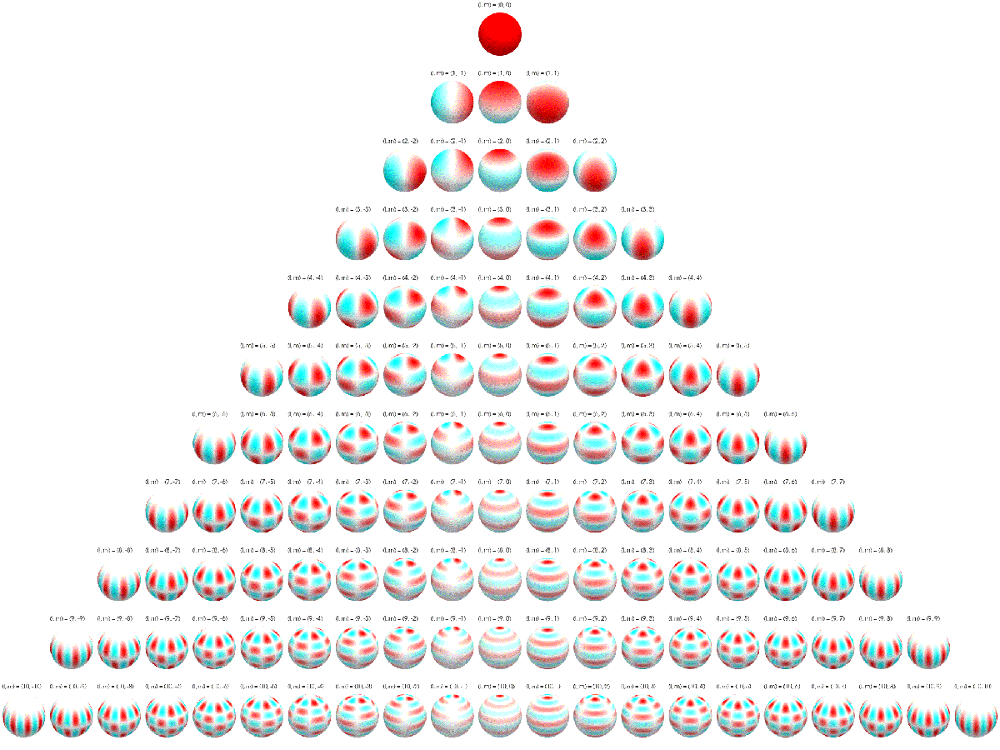
9. Covariance Decomposition (Scale + Rotation)
The Problem with Direct Optimization
The covariance matrix $\boldsymbol{\Sigma}$ must be positive semi-definite (PSD) and invertible for the Gaussian to be valid. If we directly optimize the 6 unique elements of $\boldsymbol{\Sigma}$, gradient descent can produce matrices that are not PSD (negative eigenvalues) or not invertible, making the Gaussian undefined.
The Solution: Scale + Rotation Decomposition
$\mathbf{S} = \text{diag}(s_x, s_y, s_z)$: diagonal scale matrix (3 parameters, stored as log-scale for positivity). $\mathbf{R}$: rotation matrix (derived from a unit quaternion $\mathbf{q} = (q_w, q_x, q_y, q_z)$, 4 parameters). Since $\mathbf{S}\mathbf{S}^T$ is always PSD and $\mathbf{R}$ is orthogonal, the result is guaranteed to be positive semi-definite.
Per-Gaussian Optimizable Parameters
| Parameter | Symbol | Scalars |
|---|---|---|
| Position | $\boldsymbol{\mu}$ | 3 |
| Scale | $(s_x, s_y, s_z)$ | 3 |
| Rotation quaternion | $(q_w, q_x, q_y, q_z)$ | 4 |
| Opacity | $\alpha$ | 1 |
| SH coefficients (degree 3) | $\mathbf{k}$ | 48 |
| Total | 59 |
A rotation matrix $\mathbf{R}$ has 9 elements but only 3 degrees of freedom (subject to orthogonality constraints). Quaternions provide a compact 4-parameter representation that avoids gimbal lock, supports smooth interpolation, and is easy to normalize during optimization to maintain the unit-norm constraint. The quaternion-to-rotation-matrix conversion is a standard closed-form formula.
10. Loss Function
$\mathcal{L}_1$: pixel-wise absolute difference: $\frac{1}{|\mathcal{P}|}\sum_\mathbf{p} |C_{\text{pred}}(\mathbf{p}) - C_{\text{GT}}(\mathbf{p})|$
$\mathcal{L}_{\text{D-SSIM}}$: differentiable SSIM loss. $\text{D-SSIM} = (1 - \text{SSIM})/2$, where SSIM compares luminance, contrast, and structural similarity. Captures perceptual quality beyond pixel accuracy.
$\lambda$: hyperparameter balancing the two terms.
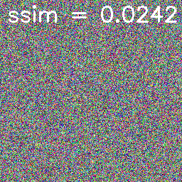
11. Adaptive Density Control
The initial SfM point cloud is sparse. Some regions are under-represented; some Gaussians may grow too large and cover areas they should not. Adaptive density control dynamically adjusts the number of Gaussians during optimization.
Three Operations
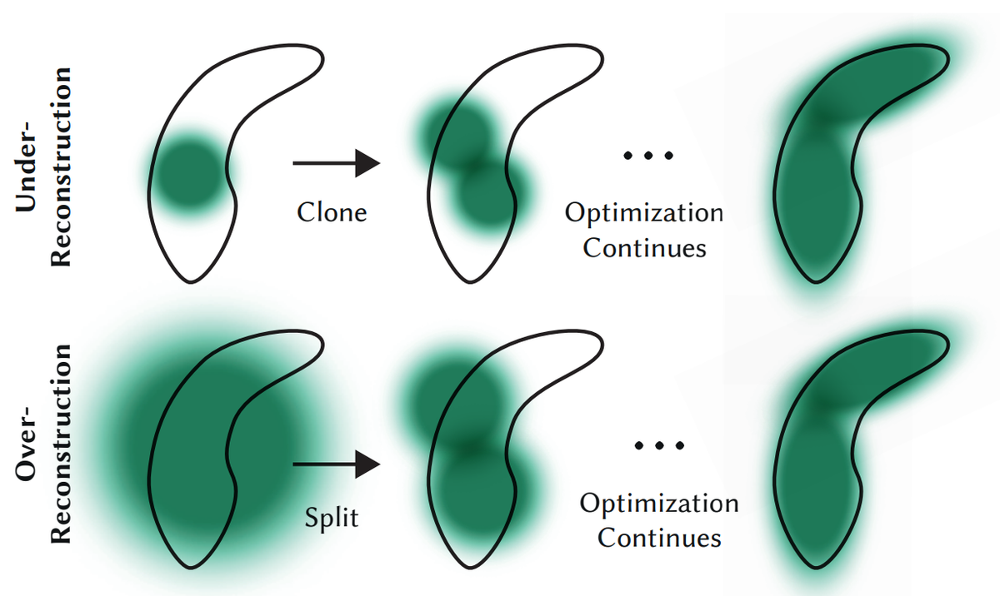
A large gradient on the Gaussian's position $\boldsymbol{\mu}$ means the optimizer is trying to move the Gaussian to better explain the training images, but cannot do so sufficiently with a single Gaussian. This indicates the region needs better coverage (more Gaussians). The gradient magnitude threshold $\tau_{\text{pos}}$ is set empirically by the authors. Adaptive density control is applied periodically during training (not every iteration).
12. NeRF vs 3DGS Comparison
| Aspect | NeRF | 3D Gaussian Splatting |
|---|---|---|
| Representation | Implicit (MLP weights) | Explicit (set of 3D Gaussians) |
| Rendering approach | Ray marching: cast ray per pixel, sample points, query MLP | Splatting: project Gaussians to 2D, composite |
| Sampling required | Yes — points along each ray | No — projection is analytical |
| Wasted computation | Empty space still requires MLP queries | Only Gaussians that overlap a pixel contribute |
| GPU efficiency | Sequential per-ray processing | Tile-based parallel rasterization |
| Speed | Slow (seconds per frame) | Real-time (>30 FPS) |
| Training time | Hours | Minutes |
| Memory | Fixed (network size, <10 MB) | Scales with scene complexity |
| Editability | Difficult (encoded in weights) | Easier (move/delete/add Gaussians) |
| Quality | High | High (comparable or better) |
13. Future Directions
4D Gaussian Splatting (Dynamic Scenes)
Standard 3DGS only handles static scenes. 4DGS (Wu et al., 2024) adds a deformation field $F(\mathbf{G}, t)$ that deforms Gaussians over time. At time $t$, the original Gaussians $\mathbf{G}$ are warped to $\mathbf{G}' = F(\mathbf{G}, t)$ and then rendered normally. Limitation: requires training over the full video sequence.
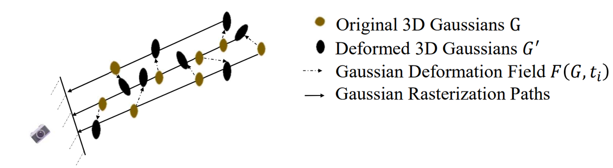
Feedforward Methods (Splatt3r, MASt3R)
Splatt3r (Smart et al., 2024) is a feedforward neural network that directly predicts Gaussian parameters from uncalibrated image pairs — no SfM, no per-scene optimization. Uses a frozen MASt3R backbone with additional prediction heads. Works zero-shot on new scenes. Currently limited to static scenes.
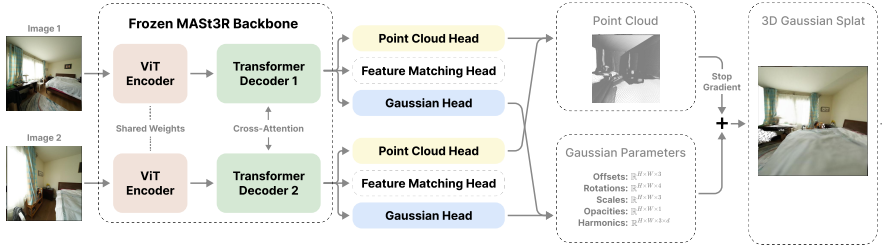
MASt3R provides a denser alternative to SfM for initialization. A ViT encoder-decoder architecture takes two patchified images and uses cross-attention between views to predict per-pixel 3D point maps and confidence maps. These dense point maps can directly initialize Gaussians at much higher density than sparse SfM.
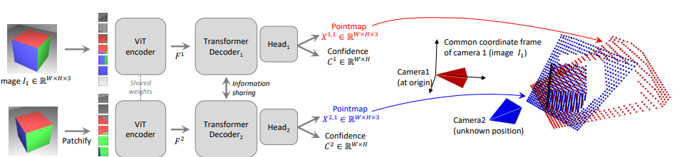
Human Avatars (Gaussian Avatars)
3DGS can create animatable human avatars by initializing Gaussians on an SMPL parametric body mesh. Non-rigid and rigid (kinematic tree) deformations match the person's shape and pose. Once trained, the avatar can be animated with novel poses via pose transfer.
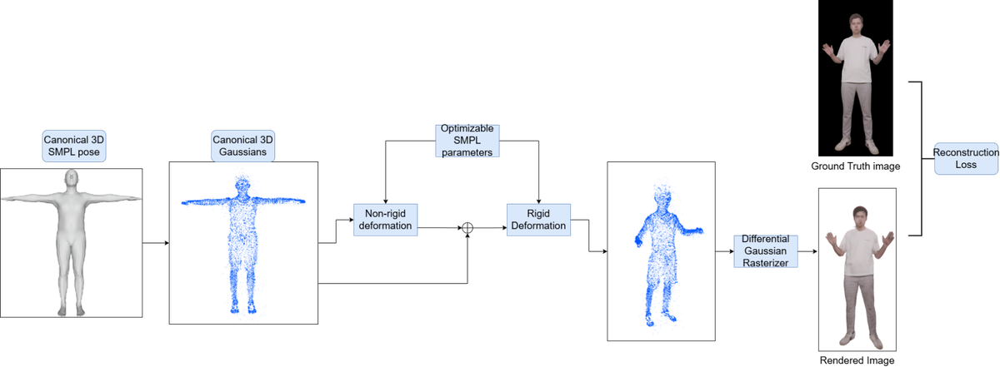